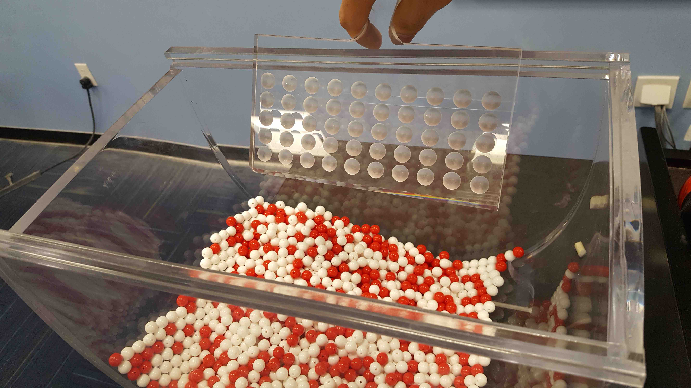
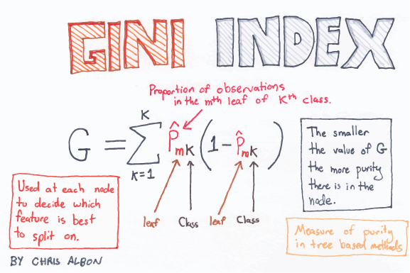
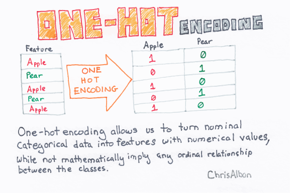

SDS 293: Modeling for Machine Learning
Albert Y. Kim
Last updated on 2020-02-24
Schedule
Lec 13: Mon 2/24
Announcements
- SDS talk this week on balancing between “having useful data” and “maintinaing sufficient privacy protection”:
- What: “Generating Synthetic Family Income for the Consumer Expenditure Surveys”
- Who: Prof. Jingchen (Monika) Hu, Vassar College
- When: Thursday Feb 27, 5pm
- Where: McConnell Hall 103
Chalk Talk
- Lec01 “What is Machine Learning?” slide 28
- \(k\) fold cross-validation
- Pseudocode for:
- Using crossvalidation to estimate error
- Using crossvalidation error estimates to find “optimal” level of complexity (“optimal” with respect to over-fitting)

- Using “optimal” level of complexity to make predictions
In-class Exercise
- Pair-programming for PS4
Lec 12: Fri 2/21
Announcements
NA
Topics
- In-class exercise
- Lec01 “What is Machine Learning?” slide 28
- MassMutual RStudio Project ->
coding.Rmd-># Wednesday, July 24 2019->## Cross-validation
Lec 11: Wed 2/19
Announcements
Chalk Talk
Recap of Lec10:
- Idea of “validation sets”:

- We want to know the proportion of the sampling bowl’s balls that are red. We don’t have the energy to do a census, so we take a sample. Why is important to mix the bowl first?
 - Lec01 “What is Machine Learning?” slide 26 stresses importance of “validation sets” when training a self-driving car.
Today:
- Create a table comparing 3 types of RMSLE scores for two
cpvalues:cp=0(relatively more complex tree) &cp=0.2(relatively less complex tree) - Comparing performance of underfit vs overfit models as a function of model complexity. See Lec01 “What is Machine Learning?” slide 27.
- How do we figure out what is “optimal” model complexity?
- In other words, the best setting of the “complexity” dial aka knob?
- For example in MassMutual RStudio Project ->
CART.Rmd-> best slider value of \(\alpha\) =cpcomplexity parameter?
Lec 10: Mon 2/17
Announcements
- Sit next to your PS3 partner
- Problem sets:
- PS3 posted
- I’m still coordinating with grader. You’ll get PS1 scores shortly.
- Great common student question: “Why are randomizing groups? Why can’t we just pick our own?”
Chalk Talk
- \(\log\)-transformations (you’ll be doing this in PS3)
- Problem: many students who used
OverallQualas a predictor, ended up with a negative prediction \(\widehat{y}\) = \(\hat{\text{SalePrice}}\) - Solution: Transforming the outcome variable space, then fitting your model, then predicting, then returning to the original variable space
- Problem: many students who used
- Recap of underfitting vs overfitting:

- Why is overfitting a problem?
- Solutions to Lec09 Exercise are posted on Slack: showing the consequences on RMSLE of making predictions on separate
testdata using a model that is HELLA overfit to thetrainingdata usingcp = 0. - What are validation sets? Train your model on one set of data, but evaluate your predictions on a separate set of data. Recall Lec01 “What is Machine Learning?” slide 26 on training a self-driving car versus evaluating it’s performance.
- Solutions to Lec09 Exercise are posted on Slack: showing the consequences on RMSLE of making predictions on separate
Lec 09: Fri 2/14
Announcements
- I’m almost finished PS3. A large part of it will involve fitting a CART model to the same house prices data as in PS2.
- Check out Machine Learning Flashcards posted on Slack in
#general - Open Slack and please join the
#questionschannel. Ask all non-private questions here.
Chalk Talk
- PS2 recap
- Two TODO’s for this PS: 1) compute RMSLE and 2) submit Kaggle predictions. Where do I use
trainand where do I usetest? - RMSE vs RMSLE. What’s the difference? Recall from Lec04 our discussion on orders of magnitude.
- Two TODO’s for this PS: 1) compute RMSLE and 2) submit Kaggle predictions. Where do I use
- CART wrap-up
- Open MassMutual RStudio Project ->
CART.Rmd-> Explain \(\widehat{p}_{mk}\), in particular how it plays into “Gini Index”.
 - What does the equation become when \(y\) is numerical
- Tie-in CART “complexity parameter” \(\alpha\) with Lec01 “What is Machine Learning?” slide 20 on under vs overfit models.
- Open MassMutual RStudio Project ->
- Two possible model outcomes: Underfitting vs overfitting:
- Open MassMutual RStudio Project ->
coding.Rmd-># Wednesday, July 24 2019->Demonstration of overfittingmodel_CART_3corresponds to a HELLA overfit model. i.e. it doesn’t generalize.- Exercise: Fit the same model but to only half the data, predict on the other half.
Lec 08: Wed 2/12
Announcements
NA
Chalk Talk
Special cases
- How do I do binary splits on categorical predictors that have been one-hot encoded. Note: many statistical software packages will do this automatically for you.
 - Works for both types of outcomes \(y\): numerical & categorical. Show code
What does the complexity parameter do?
Today’s chalk talk on CART is based on the Tuesday PM topics in the MassMutual Google Doc.
Open the MassMutual RStudio Project -> CART.Rmd Shiny app. (Note: after you install the necessary packages, this should knit.)
- On what variable and where along selected variable do the splits occur?
- How many splits, i.e. how far do we “grow” the tree? Or in other words, how complex do we make the tree?
Lec 07: Mon 2/10
Announcements
- Open 293 GitHub organization -> look at PS2
Chalk Talk
Today’s chalk talk on CART is based on the Tuesday PM topics in the MassMutual Google Doc.
Open the MassMutual RStudio Project:
First: Based on coding.Rmd -> Tuesday -> iris dataset. (Note: You might have to do a little debugging to get this to knit, like setting eval = TRUE for all code blocks.)
- What is classification?
- How do I interpret trees? Binary splits on predictor variables
- Go over code for CART.
Lec 06: Fri 2/7
Announcements
- PS1
- Sit next to your PS1 teammate for today’s in-class exercise
- Albert will go over some PS1 highlights
- PS2: Groups posted, but do not clone PS2 repos until I say so. It will involve:
- Creating a model with 3 numerical & 3 categorical variables
- Applying your fitted model to the training data, comparing \(y\) and \(\hat{y}\), and computing RMLSE using
mutate()
- Open syllabus: office hours calendar posted on top.
- If you haven’t already, please change your default GitHub profile picture. It doesn’t have to be a picture of you, but please put an image. This will help me quickly identify who’s who.
Chalk Talk
1. Lec05 Recap
Exercise from Lec05 -> MassMutual RStudio Project -> Tuesday -> Exercise: Submit Kaggle predictions using linear regression model.
- What issues did you encounter?
- What variables did you use? Did you not use?
2. Git merge conflicts
In-class exercise. The screencast is posted here.
- Open:
- RStudio -> PS1 RStudio Project
- GitHub organization for this class (click octocat button on top)
- Both of you, “pull” your repo to update it
- Both of you, edit the same line in
README.md, but write something different. - Both of you, commit your change but do not push it yet.
- Only one of you (call them person A), push your commit.
- Person B: Try to push your commit. You won’t be able to because you have a merge conflict. You need to resolve it.
- Person B: “Pull” your repo to bring in the merge conflict.
- Both of you, resolve the merge conflict together.
3. Ethical discussion
The iris dataset has historically been one of the most widely used datasets in statistics, first collected by Ronald A. Fisher. Type ?iris in the console and look at “Source.” While Fisher has done a lot to advance the field, some of his views were IMO problematic.
4. Classification & Regression Trees
What are classification and regression trees? Here is one example from the New York Times. Note: Smith students can get free access to the New York Times and Wall Street Journal via Smith Libraries.
Lec 05: Wed 2/5
Announcements
- Added two notes to PS1
Chalk Talk
- Multiple regression
- In MassMutual RStudio Project -> Tuesday -> Kaggle -> Exercise on Kaggle submission.
Lec 04: Mon 2/3
Announcements
- For this week’s lectures, sit with your PS1 teammate. The groups are posted on Slack under
#general - Lecture policies
- You don’t need to inform me about occasional absenses, but please give your teammate a heads up as a curtesy.
- Please do not leave in the middle lecture, unless you get prior approval from me, as this can be very distracting. After you get prior approval, please sit near the exit.
- PS1 is now ready!
What is a minimally viable product?
When building a product, in my opinion (IMO):
- Don’t: Try to do everything completely and perfectly from the beginning. This leads perfectionism, which leads to procrastination and “analysis paralysis.”
- Do: Start by finishing a minimially viable product ASAP!

Once you’re done your MVP, iterate and improve by slowly adding complexity that work:
In other words:
Chalk Talk
- In-class demo
- Open
MassMutualRStudio Project ->coding.Rmd-># Tuesday, July 23 2019->## Gentle Introduction to Kaggle Competitions. Discussion on:- “Minimally viable product” model \(\widehat{y} = \overline{y}\) for all houses.
- log10-transformations:
- A discussion on orders of magnitude as well as another house prices example of a log10-transformation.
- Powers of Ten movie by Charles and Ray Eames.
Lec 03: Fri 1/31
Announcements
- GitHub organization for this class:
- Access it by clicking the “octocat” icon on the top left of this page
- Ensure you are a member (I sent an email invite yesterday)
- GitHub profile. Think of it as an extension of your resume. I highly encourage, but do not require, you to:
- Post your full name
- Post your affiliation
- Post a public-facing profile picture (it doesn’t have to be an image of you, it can be any picture).
- Please don’t change your GitHub ID’s mid-semester!
- FYI: GitHub is not without controversy
Chalk Talk
GitHub has many definitions that are unforunately not straight forward. Using fivethirtyeight R package as an example.
- Git vs GitHub
- Local vs remote
- Repos &
README.mdfiles as cover pages - Cloning a repo locally (which in our case correspond to RStudio Projects). Ex: Big green “Clone or download” button on top right.
- Commit/push and pull. Commits as units of change. Ex: Click “commits” tab on top left (currently at 523 commits)
- Branches:
masterbranch is what you see. Ex: Click “Branch” button on top left - Making contributions to
master- When on the inside: Create a new branch, make edits in branch, then make pull request
- When on the outside: Fork the repo (similar to creating a branch), make edits in your forked copye of repo, then make pull request
- Ex: Click on Insights tab on top right -> Network -> Scroll to earlier dates.
- Learning git has a steep learning curve. This is normal:
- xkcd
- Oh shit, git!
- In this class: I’ll (gently) force you to practice merge conflicts
Lec 02: Wed 1/29
Announcements
- On Sun 1/26 I sent an email including links to join Slack and a Intro Survey Google Form. If you did not receive this email, please come see me after class.
- Syllabus posted